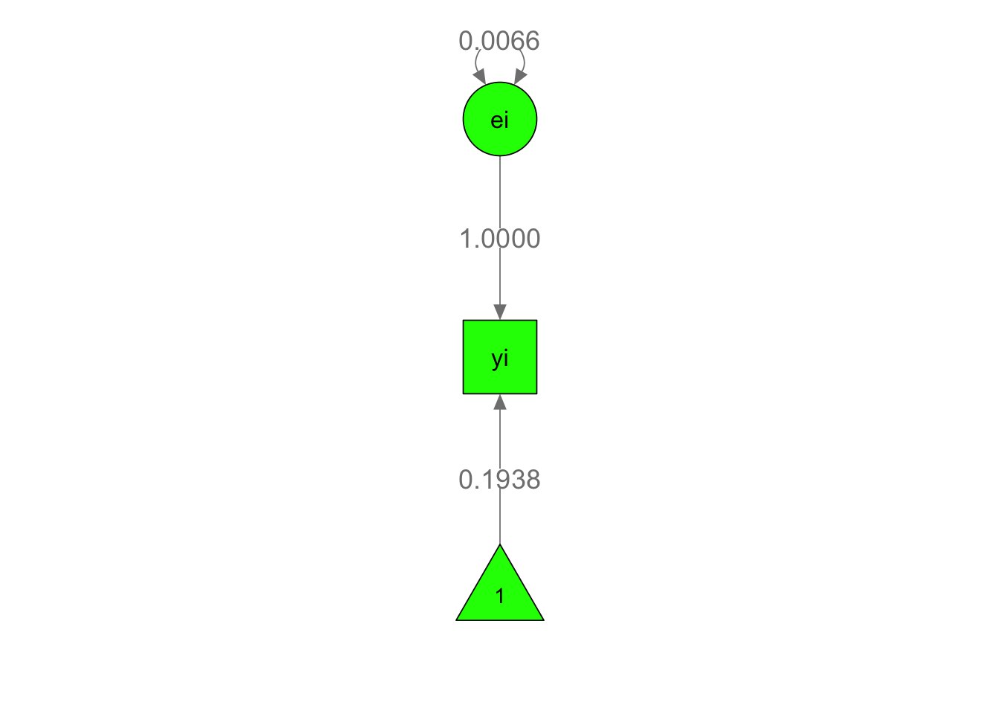

Code
library(metaSEM)
library(symSEM)Mike Cheung
February 15, 2025
Treats studies in a meta-analysis as subjects in SEM.
Observed effect sizes correspond to observed variables; population (true) effect sizes correspond to latent variables.
Mean and variance of effect sizes equate to average effect and heterogeneity variance in meta-analysis.
Sampling variance is analogous to measurement error in SEM.
Study characteristics (covariates) can predict effect sizes in cases of excess heterogeneity.
Advantages:
study i is de notated as \(y_i\) and is represented as: \[y_i = f_i + e_i\] \(y_i\) = sample (observed) effect size for the ith study, \(f_i\) = population (true) effect size, \(e_i\) = error term in the observed effect-size, \(var(e_i)\) = a.k.a \(v_i\) sampling variance (usually known in MA)Equations: \[ y_{\text{SMD}} = \frac{\bar{X}_1 - \bar{X}_2}{S_{\text{pooled}}}, \quad S_{\text{pooled}} = \sqrt{\frac{(n_1-1)S_1^2 + (n_2-1)S_2^2}{n_1 + n_2 - 2}} \]
Sampling Variance: \[ v_{\text{SMD}} = \frac{n_1 + n_2}{n_1 n_2} + \frac{y_{\text{SMD}}^2}{2(n_1 + n_2)} \]
R Code:
compute_SMD <- function(m1, m2, sd1, sd2, n1, n2) {
pooled_sd <- sqrt(((n1 - 1)*sd1^2 + (n2 - 1)*sd2^2) / (n1 + n2 - 2))
smd <- (m1 - m2) / pooled_sd
v_smd <- (n1 + n2)/(n1 * n2) + smd^2/(2*(n1 + n2))
return(data.frame(y = smd, v = v_smd))
}
# Example: Compute SMD for two groups
compute_SMD(m1 = 10, m2 = 8, sd1 = 2, sd2 = 1.5, n1 = 50, n2 = 50) y v
1 1.131371 0.0464Equation: \[ y_i = \mu + e_i, \quad e_i \sim N(0, v_i) \]
SEM Representation:
R Code:
## Fixed-effect model with a latent variable ei
m1a <- "ei =~ 1*yi ## e as a latent variable and yi is its indicator
yi ~ mu*1 ## Mean(yi) = mu
yi ~~ 0*yi ## Set the error variance of yi at 0
ei ~~ data.vi*ei ## Var(yi) = vi, which is assigned from data
"
## Fixed-effects model without specifying ei
m1b <- "yi ~ mu*1 ## Mean(yi) = mu
yi ~~ data.vi*yi ## Var(yi) = vi, which is assigned from data
"
## Convert the lavaan model to RAM specification
## obs.variables = "yi": "yi" is the observed variable
ram1 <- lavaan2RAM(m1a, obs.variables = "yi", std.lv = FALSE)
## Display the RAM model
#ram1
## Get the model-implied mean and variance structures
#impliedS(ram1)
## Fit the model to the data
fit1 <- sem("Fixed", RAM = ram1, data = dat1)
summary(fit1)95% confidence intervals: z statistic approximation (robust=FALSE)
Coefficients:
Estimate Std.Error lbound ubound z value Pr(>|z|)
mu 0.1937681 0.0079323 0.1782212 0.2093151 24.428 < 2.2e-16 ***
---
Signif. codes: 0 '***' 0.001 '**' 0.01 '*' 0.05 '.' 0.1 ' ' 1
Information Criteria:
df Penalty Parameters Penalty Sample-Size Adjusted
AIC: 9.069733 131.0697 131.1375
BIC: -117.582699 133.1806 130.0348
Number of subjects (or studies): 61
Number of observed statistics: 61
Number of estimated parameters: 1
Degrees of freedom: 60
-2 log likelihood: 129.0697
OpenMx status1: 0 ("0" or "1": The optimization is considered fine.
Other values may indicate problems.)
Equation: \[ y_i = \mu + u_i + e_i, \quad u_i \sim N(0, \tau^2), \quad e_i \sim N(0, v_i) \]
R Code:
## Random-effects model
m2 <- "ui =~ 1*yi ## ui is the random effect
ui ~~ tau2*ui ## Var(ui) = tau2
yi ~ mu*1 ## Mean(yi) = mu
yi ~~ data.vi*yi ## Var(yi) = vi, which is assigned from data
"
## Display the conceptual model
#plot(m2, color="yellow", sizeInt = 7)
## Convert the lavaan model to RAM specification
## std.lv = FALSE: Ensure the latent variable is not standardized
ram2 <- lavaan2RAM(m2, obs.variables = "yi", std.lv = FALSE)
## Get the model-implied mean and variance structures
#impliedS(ram2)
## intervals.type = "LB": Request likelihood-based CI
fit2 <- sem("Random", RAM = ram2, data = dat1, intervals.type = "LB")
summary(fit2)95% confidence intervals: Likelihood-based statistic
Coefficients:
Estimate Std.Error lbound ubound z value Pr(>|z|)
mu 0.186622 NA 0.147890 0.225105 NA NA
tau2 0.017034 NA 0.010589 0.027596 NA NA
Information Criteria:
df Penalty Parameters Penalty Sample-Size Adjusted
AIC: -173.4423 -51.44225 -51.23536
BIC: -297.9838 -47.22051 -53.51209
Number of subjects (or studies): 61
Number of observed statistics: 61
Number of estimated parameters: 2
Degrees of freedom: 59
-2 log likelihood: -55.44225
OpenMx status1: 0 ("0" or "1": The optimization is considered fine.
Other values may indicate problems.)Warning in collectStatistics1(otherStats, ref, other, bootPair): Model 'Fixed'
has more degrees of freedom than Random which means that the models need to be
compared in the opposite order base comparison ep minus2LL df AIC diffLL diffdf p
1 Fixed <NA> 1 129.06973 60 131.06973 NA NA NA
2 Fixed Random 2 -55.44225 59 -51.44225 -184.512 -1 NA| Model | Equation | SEM Component | R Function |
|---|---|---|---|
| Fixed-Effect | \(y_i = \beta_F + e_i\) | No latent variables | meta(y, v) |
| Random-Effects | \(y_i = \beta_R + u_i + e_i\) | Latent \(f_i \sim N(\beta_R, \tau^2)\) | meta(y, v) |
| Mixed-Effects | \(y_i = \beta_0 + \beta_1 x_i + u_i + e_i\) | Latent \(f_i \sim N(\beta_0 + \beta_1 x_i, \tau^2)\) | meta(y, v, x) |